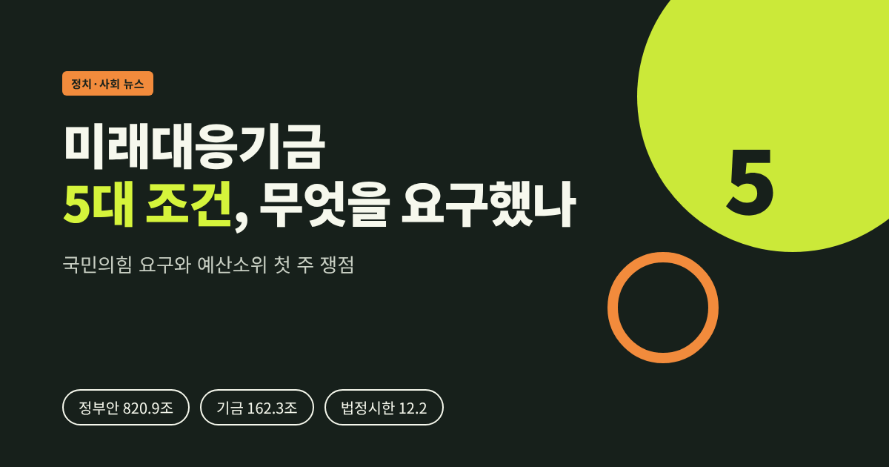
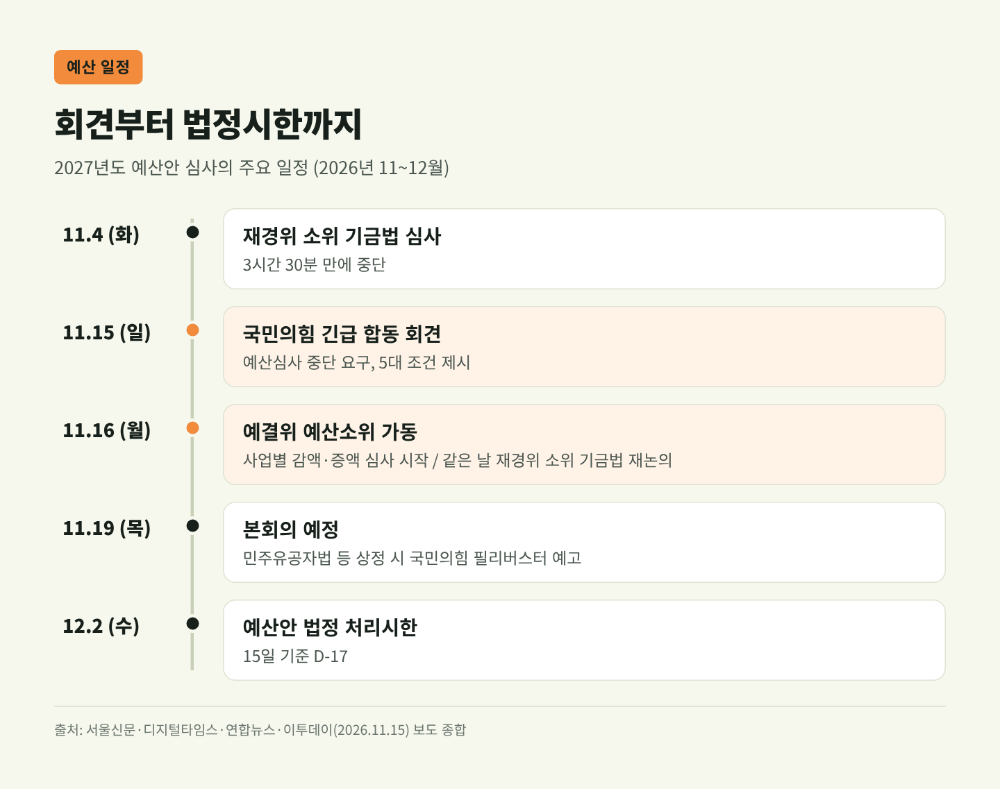
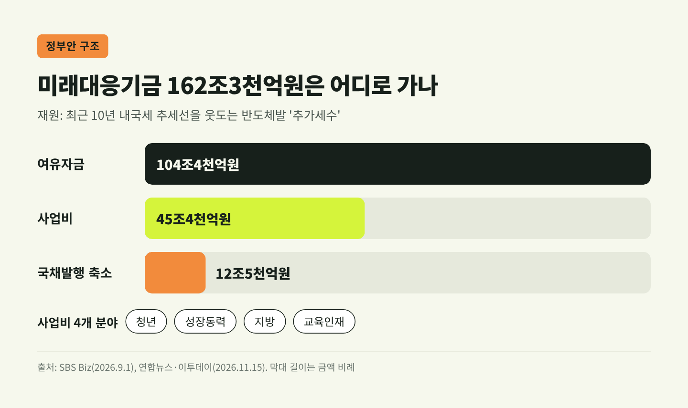
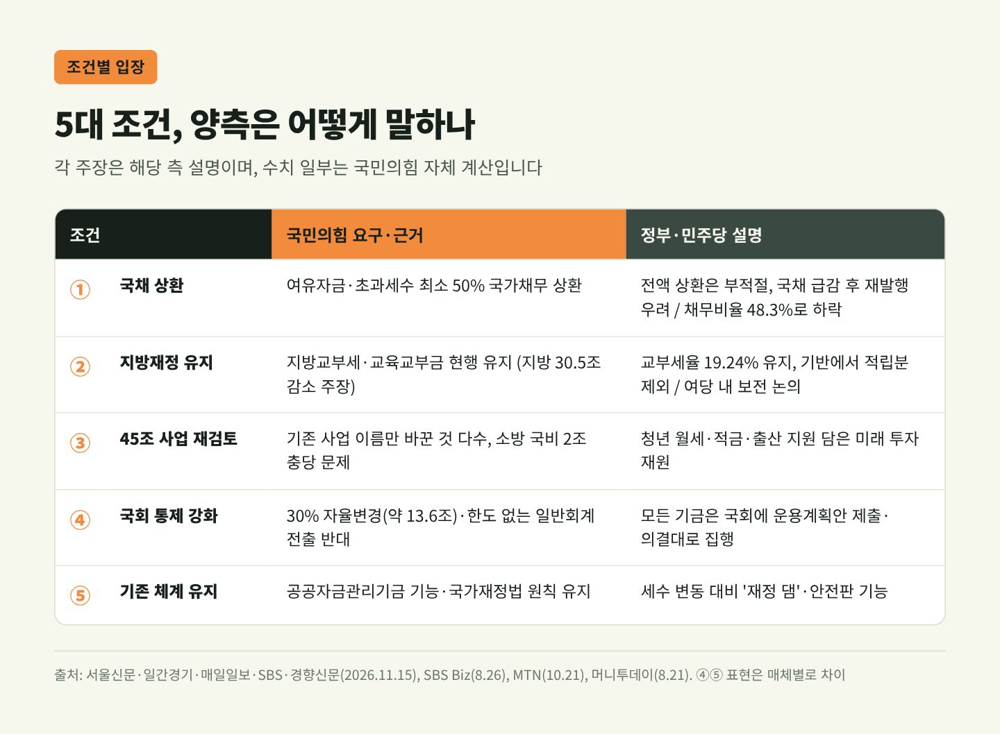
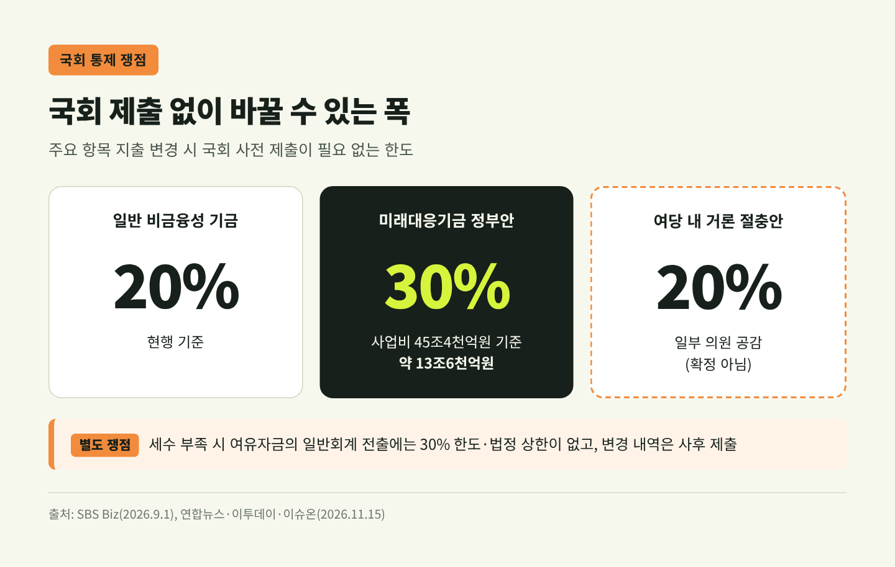
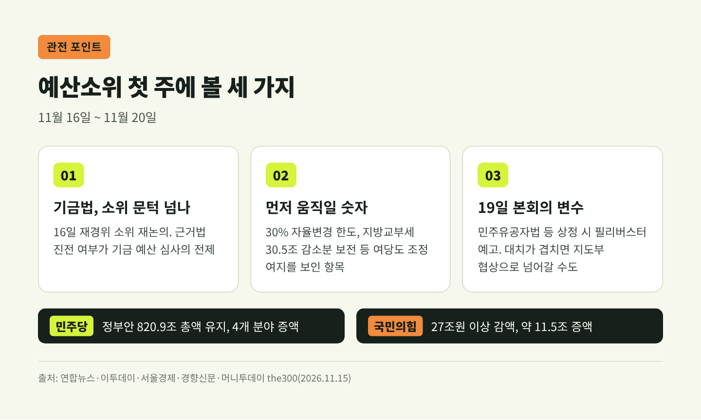

미래대응기금 5대 조건, 국민의힘 요구와 예산소위 첫 주 쟁점

이번 글에서는 국민의힘이 11월 15일 내건 미래대응기금 '5대 조건'을 하나씩 정리해 보겠습니다.
조건마다 어떤 숫자와 논리가 붙어 있는지, 정부와 민주당은 무엇으로 맞서는지 나란히 놓았습니다.
마지막으로 16일 시작되는 예결위 예산소위 첫 주에 지켜볼 대목을 짚습니다.
세 줄 요약
- 국민의힘은 "최소한의 조건을 받아들이지 않는 한 기금 논의는 한 치도 앞으로 나아갈 수 없다"(경향신문 인용)며 기금 예산 심사 중단을 요구했습니다.
- 조건의 축은 국채 상환, 지방재정 유지, 45조원 사업 재검토, 국회 통제 강화, 기존 재정 체계 유지 다섯 가지입니다.
- 정부·민주당은 기금을 세수 변동에 대비한 '안전판'이자 미래 투자 재원으로 설명하며, 법정시한(12월 2일) 내 처리를 공언하고 있습니다.
■ 15일 기자회견에서 나온 요구
기자회견은 15일 오후 국회에서 열렸습니다.
국민의힘 재정경제기획위원회와 예산결산특별위원회 위원들이 함께한 긴급 합동 회견입니다.
유상범 예결위 야당 간사와 배준영 재경위 야당 간사가 앞에 섰고, SBS 보도에 따르면 송언석·강대식·박수영·서지영·이종욱 의원도 참석했습니다.
요구는 분명했습니다.
"법적 근거 없는 미래대응기금 예산심사를 중단하고 5대 조건을 수용하라"는 것입니다(일간경기).
배준영 의원은 이를 "상식적인 최소한의 조건"이라고 표현했습니다.
박수영 의원은 법안 조문 대부분에 문제가 있어 핵심 다섯 가지로 줄였다고 설명했습니다(SBS).
'법적 근거' 문제는 일정과 맞물려 있습니다.
미래대응기금법과 국가재정법 개정안은 9월 1일 국무회의를 통과했지만 아직 국회 문턱을 넘지 못했습니다.
11월 4일 재경위 소위 심사는 3시간 30분 만에 중단됐고, 16일 다시 논의할 예정입니다(서울신문).
근거법이 확정되기 전에 기금 예산부터 예결위 심사에 오르는 구도를 국민의힘은 문제 삼고 있습니다.

■ 기금은 어떻게 짜여 있나
조건을 보기 전에 정부안의 뼈대부터 확인해 두겠습니다.
2027년도 정부 예산안 총지출은 820조9천억원입니다.
올해 본예산보다 12.8% 늘어난 사상 최대 규모로, 보도에서는 흔히 '821조원'으로 표기됩니다.
미래대응기금의 재원은 반도체 호황에서 나온 '추가세수' 162조3천억원입니다.
최근 10년 내국세 추세선을 웃도는 몫을 따로 떼어낸다는 개념입니다(SBS Biz).
이 가운데 45조4천억원은 청년·성장동력·지방·교육인재 4개 분야 사업비로, 12조5천억원은 신규 국채 발행 축소에 씁니다.
나머지 104조4천억원은 여유자금으로 쌓아 둡니다.

■ 조건 ①② — 국채 상환과 지방재정
첫째 조건은 국채 상환입니다.
서울신문·일간경기 보도 기준으로 "여유자금과 초과세수의 최소 50%를 국가채무 상환에 쓰라"는 요구입니다.
유상범 의원은 여유자금을 국채 상환에 돌리면 연간 약 3조원의 이자를 아낄 수 있다고 주장했습니다.
정부 쪽 논리는 다릅니다.
청와대 관계자는 8월에 "국가채무 전액 상환은 적절하지 않다"는 취지로 설명했습니다.
후년 세수가 불확실한데 국채를 급격히 줄였다가 다시 발행하는 상황을 피해야 한다는 이유입니다(SBS Biz).
민주당은 기금을 두고도 국가채무비율이 48.3%로 3.3%포인트 낮아진다는 점을 내세웁니다.
둘째는 지방교부세와 지방교육재정교부금을 현행대로 유지하라는 조건입니다.
정부안은 지방교부세 비율 19.24%는 그대로 두되, 계산 기반에서 기금 적립분을 빼는 방식입니다(머니투데이).
그 결과 내년 지방교부세는 기존 산정액보다 30조5천억원 적게 편성됐습니다.
국민의힘은 여기에 교육재정 감소분 32조5천억원도 더해 문제를 제기했습니다. 다만 교육재정 수치는 국민의힘 계산으로만 확인됩니다.
이 조건은 여당 안에서도 공감대가 있는 대목입니다.
경향신문은 여당 예결위원의 말을 빌려 지방교부세를 13~15조원 늘리는 방안이 논의된다고 전했습니다.
이해식 행안위 민주당 간사도 지방재정 자율성을 보장할 장치를 요구했습니다.
■ 조건 ③ — 45조원 사업, 새 사업인가 옛 사업인가
셋째 조건은 45조4천억원 지출사업의 전면 재검토입니다.
국민의힘은 상당수가 기존 부처 사업의 이름만 바꾼 것이라고 주장합니다.
소방 국비 2조원을 기금에서 충당하는 방안도 문제로 꼽았습니다(서울신문).
최보윤 수석대변인은 기금 사업비의 46.7%가 한 번 편성하면 줄이기 어려운 지출이라고 했습니다.
민주당의 설명은 반대편에 서 있습니다.
조계원 대변인은 기금이 청년 월세·청년 적금·출산 지원 등을 담은 "미래 투자 재원"이라고 말했습니다(경향신문).
이용우 대변인은 국민의힘이 기금 전액 삭감을 외치면서 기금 안의 지역 사업 증액은 요구한다고 꼬집었습니다.
상임위에서는 이미 작은 조정이 나왔습니다.
보건복지위원회는 기금에 편성된 아동기본수당·출산지원금 3조6253억원을 일반회계로 돌리라는 부대의견을 여야 합의로 의결했습니다(머니투데이 the300).

■ 조건 ④⑤ — 국회 통제와 재정 체계
넷째와 다섯째 조건은 '누가 기금을 통제하느냐'의 문제입니다.
매체마다 표현은 조금씩 다릅니다.
넷째는 "국회의 기금 지출 통제권 강화"(서울신문), "국회 승인 없는 기금 사용 금지"(매일일보) 등으로 보도됐습니다.
다섯째는 공공자금관리기금 기능 유지와 국가재정법 원칙 준수로 요약됩니다.
쟁점이 되는 조항은 두 가지입니다.
하나는 사업 지출의 30%까지 국회에 변경안을 내지 않고 바꿀 수 있게 한 부분입니다.
일반 비금융성 기금의 기준은 20%인데, 미래대응기금은 30%를 허용했습니다(SBS Biz).
45조4천억원의 30%이면 약 13조6천억원입니다.
다른 하나는 세수가 부족할 때 여유자금을 일반회계로 옮기는 절차입니다.
이 전출에는 30% 한도도, 법정 상한도 없습니다. 변경 내역은 사후에 상임위·예결위에 제출됩니다.
국민의힘은 이를 두고 104조원이 국회 의결 없이 빠져나갈 수 있다고 비판합니다.
정부의 답은 "국회 통제 밖의 기금은 없다"는 것입니다.
박홍근 기획예산처 장관은 모든 기금이 국회에 운용계획안을 제출하고 의결대로 집행해야 한다고 강조했습니다.
기금을 "재정 댐"에 비유하기도 했습니다(MTN).
전문가 의견도 엇갈립니다. 김학수 KDI 선임연구위원은 국회 심의·인출 규정을 명확히 하지 않은 해외 사례는 알려진 바 없다고 지적했습니다.
여당 안에서는 30% 한도를 20%로 낮추는 절충안이 거론됩니다(이슈온·이투데이).
이 숫자가 조정되는지가 협상의 첫 신호가 될 수 있습니다.

■ 예산소위 첫 주, 무엇을 볼까
16일부터 예결위 예산안조정소위가 세부 사업별 감액·증액 심사에 들어갑니다.
같은 날 재경위 소위에서는 미래대응기금법이 다시 논의됩니다.
예산 숫자와 근거법이 같은 날 각각 다른 방에서 다뤄지는 셈입니다.
양측의 출발선은 멀리 떨어져 있습니다.
민주당은 정부안 총액 820조9천억원 유지를 기본으로 인프라·지방재정·민생·안전 분야 증액을 예고했습니다.
국민의힘은 100대 문제 사업을 중심으로 27조원 이상 감액, 기금 전액 감액과 지방교부세 30조5천억원 원상 복구를 내걸었습니다.
청년·민생·일자리 예산은 약 11조5천억원 늘리겠다는 입장입니다.
첫 주 관전 포인트는 세 가지로 추릴 수 있습니다.
첫째, 재경위 소위에서 기금법 논의가 진전되는지입니다.
둘째, 30% 한도와 지방교부세 보전처럼 여당도 손볼 여지를 내비친 항목이 먼저 움직이는지입니다.
셋째, 19일 본회의입니다. 민주유공자법 등이 상정되면 국민의힘은 필리버스터를 예고해 둔 상태입니다.
이투데이는 예산소위와 본회의 대치가 같은 주에 겹치면서, 합의가 없으면 원내지도부 협상으로 넘어가 일정이 밀릴 수 있다고 전망했습니다.

정리하면 이렇습니다.
5대 조건은 기금을 둘러싼 질문 다섯 개를 숫자로 바꿔 놓은 목록입니다.
정부와 여당은 기금이 세수 변동을 버티는 장치라고 말하고, 국민의힘은 국회의 예산 권한이 약해진다고 말합니다.
처음에는 기금을 둘 것인가가 쟁점이었다면, 지금은 어떤 조건으로 둘 것인가로 일부 옮겨 가는 모습도 보입니다.
어느 쪽 설명이 더 설득력 있는지는 결국 소위에서 바뀌는 숫자가 보여줄 것입니다.
12월 2일까지 남은 시간은 17일 — 첫 주의 움직임이 그 시간표를 지킬 수 있을지 가늠하는 잣대가 되겠습니다.
참고 기사
- 서울신문, 「국민의힘 "미래대응기금, 5대 조건 수용 없인 심사 불가"」(2026.11.15)
- 일간경기, 「국힘 미래대응기금 심사 '5대 조건' 제시」(2026.11.15)
- 매일일보, 「국힘 "미래대응기금, 예산심사 당장 멈춰라"」(2026.11.15)
- SBS, 「국민의힘 "미래대응기금은 미래 약탈 기금·정권 통치 자금"」(2026.11.15)
- 경향신문, 「820조 예산안 감액·증액 조율 돌입」(2026.11.15)
- 이투데이, 「821조 예산 '칼질' 시작」(2026.11.15)
- 연합뉴스(서플 게재), 「예산안 처리시한 2주여 앞으로…여야, 예결소위서 본격대결 돌입」(2026.11.15)
- 머니투데이 the300(서플 게재), 「법정시한 D-17에도 여야 평행선」(2026.11.15)
- SBS Biz, 「162조 미래기금 신설…」(2026.09.01) · 「靑 "채무 상환보다 미래 이익에…"」(2026.08.26)
- 머니투데이, 「'재정 저수지' 미래대응기금 신설…」(2026.08.21) / MTN, 박홍근 장관 발언(2026.10.21)
#미래대응기금 #5대조건 #예산소위 #2027예산안 #국민의힘 #더불어민주당 #지방교부세 #국회예산심사